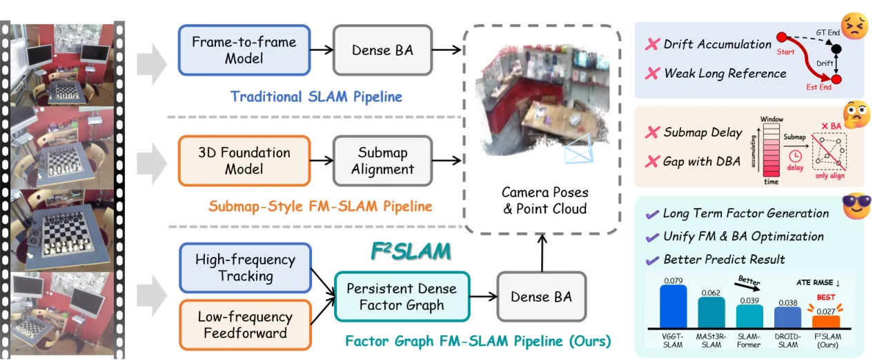
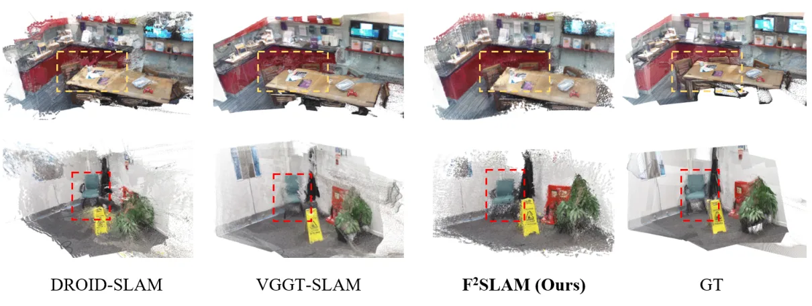
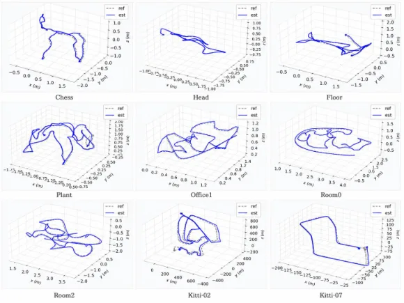
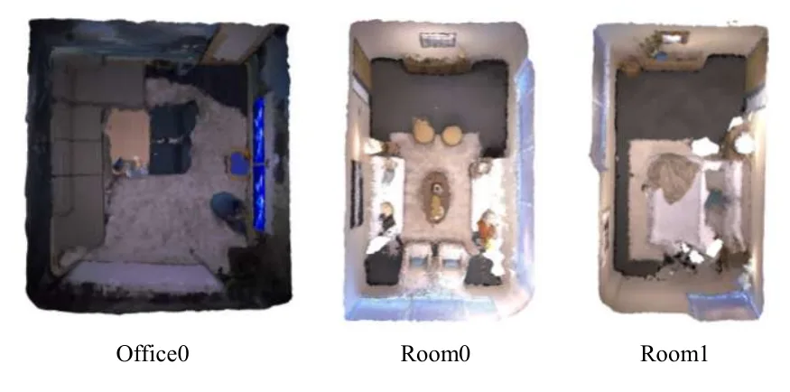
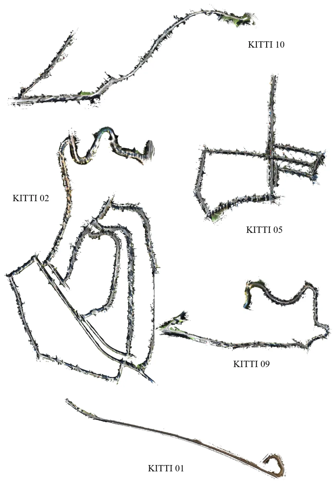

F²SLAM：把前馈几何转化为 SLAM 的持久因子
F$^2$ SLAM: Turning Feed-Forward Geometry into Persistent Factors for SLAM
把 Flow3r/前馈几何变成稠密 BA 内的 target-weight 因子，与 DROID 式高频跟踪在同一因子图里联合优化，并用状态一致性门控决定低频量测是否刷新；Replica 未标定平均 ATE 0.002 m，7-Scenes 完成度从 0.030 降到 0.015 m。
ATE
Comp.
FPS
ATE w/o gate
作者、单位与技术谱系 · Research context
作者与单位
研究脉络
- DROID-SLAM（Teed & Deng, NeurIPS 2021）方法基座关系：高频跟踪与稠密 BA 后端直接沿用 DROID-Net 与密集重投影残差形式。[论文 §3.4、§4.1]
- Flow3r（Cong et al., 2026）方法上游关系：低频流用 Flow3r 预测位姿、深度与位移-置信度对，是低频几何证据的来源。[论文 §4.1]
- FrameVGGT（Xu & Oishi, 2026a）团队前作关系：第一作者 Zhisong Xu 的流式几何记忆工作，长序列/在线几何的问题脉络延续。[论文 §2 与参考文献 Xu & Oishi (2026a)]
- MASt3R-SLAM / VGGT-SLAM / VGGT-SLAM++问题上游关系：被本文定位为‘事后对齐/一次性校正’的 FM-SLAM 范式，是本文要改进的对照基线。[论文 §1、§2]
合作网络
- 东京大学 ↔ 萨拉戈萨大学 ↔ 中国科学技术大学 跨机构署名The University of Tokyo（Xu、Zhu、Qian） → University of Zaragoza（Zhao、Civera）关系：共同署名[arXiv 首页署名]
- 东京大学内部同单位署名Zhisong Xu → Jiawei Qian关系：共同署名（同单位）[arXiv 首页署名]
- 对 DROID-Net 与 Flow3r 的技术依赖F²SLAM → DROID-Net（Teed & Deng）/ Flow3r（Cong et al.）关系：明确技术依赖（非共同署名）[论文 §4.1]
作者与单位来自论文首页署名（含等贡献/通讯标注）；谱系依据正文引用与同作者作品标注为‘基于来源的解读’。合作边仅记录共同署名与公开技术依赖，未推断导师/师生关系。
方法本质拆解 · What actually changed
是不是微调？
不是从头训练就是端到端新网络：高频跟踪用预训练 DROID-Net，低频用预训练 DINO 提特征 + Flow3r 预测位姿/深度/位移-置信度对，均沿用公开预训练权重；论文未声明再训练这些网络。可变的只是在线状态（位姿/逆深度/可选内参）与因子图上的量测，属‘预训练模型 + 纯在线几何优化’，推理确定性、无随机采样。
有没有额外约束？
新增约束作用在几何状态与量测准入上：BA 目标为置信度加权稠密重投影残差（对角信息矩阵 Λ_ij=diag(w_ij)）+ 逆深度梯度正则（λ_d‖∇d‖²）+ 内参先验（λ_θ‖θ−θ_0‖²_Σ）；低频候选需通过状态一致性门控（r_sup≥τ_sup ∧ s_ij≥τ_score，s_ij 由平均置信度、内点比、支撑比与平均重投影误差组成）。约束作用在关键帧位姿、逆深度与可选内参这些变量上。
推理/后端到底做了什么？
推理是在线 SLAM：高频流按图像空间运动插关键帧、用 DROID 式循环更新器生成并覆写局部 target-weight 量测，维持图拓扑；低频流按累积运动触发，用多视图 Transformer 生成候选量测，经门控后刷新既有边（刷新后锁定）；两条流的所有量测进入同一次稠密 BA（阻尼 Gauss–Newton，2 次迭代/图更新），同时优化位姿、逆深度与可选内参。没有独立的子图对齐阶段，也没有显式回环闭合。
方法本质是什么？
本质是把前馈几何从‘外部状态’降维成‘BA 能直接优化的一类量测’：用统一的 target-weight 格式与 gauge 对齐把两种异构预测（局部循环相关体 vs 全局多视图 Transformer）映射到同一坐标系，用状态一致性门控保证只有与当前几何一致的候选才被接纳。它改变的是多视图前馈证据在同一几何状态上的不确定性——不再是一次性校正，而是可反复刷新的优化约束；没有引入独立的优化状态或全局 BA 之外的后端。
输入为 RGB 流；改变的位置是把前馈（Flow3r）几何转成稠密 BA 内的 target-weight 因子并与 DROID 式高频因子共享同一状态；合并动作是准入门控（支撑比/内点比/平均误差）通过后刷新并锁定既有边、单次稠密 BA 联合优化；直接效果是 Replica 未标定平均 ATE 0.002 m、7-Scenes 完成度误差减半，运行时 7.4 FPS。

动机与问题Motivation
动机与问题
论文指出已有 FM-SLAM（MASt3R-SLAM、VGGT-SLAM 等）通常在局部窗口/子图上做前馈预测，再以对齐、融合或状态级校正事后调和。这带来两个代价：更广的多视图证据从未进入稠密 BA 真正优化的量测集；子图一旦对齐便无法随后的局部证据再联合重加权（校正只施加一次）。缺失的环节是：让前馈几何直接且可重复地参与持久 SLAM 优化，而不是一次性外部校正。据此本方法把前馈几何变成因子图上的稠密量测，使两条流在同一优化状态上反复作用。
方法Method
方法总览
系统维护持久几何状态 X_t = {T_i, d_i} ∪ {θ}（位姿、稠密逆深度、可选内参）与活跃边集；每条边存一个稠密 target-weight 量测 M_ij=(p*_ij, w_ij) 及元数据 ℓ_ij∈{high,low}、γ_ij∈{0,1}。高频流按图像空间运动选关键帧，用 DROID 式循环更新器生成局部目标量测并维持图拓扑；低频流把新关键帧累积成调度窗口，用 MVTrans 多视图特征与因子解码器生成候选量测（完整源到目标位移 f_ij^low），再经状态一致性门控决定是否刷新既有边。两条流共享同一批位姿/逆深度/内参，由单次稠密 BA 联合优化。
关键技术细节
门控是方法的关键：对候选对计算支撑集比例 r_sup、内点比例 r_in、平均置信度 c̄ 与内点平均重投影误差 ē_low，形成接受分 s_ij=(c̄·r_in·√r_sup)/(1+ē_low)，仅当 r_sup≥τ_sup 且 s_ij≥τ_score 才刷新既有边（ℱ_ij←(M_ij^low, low, 1)），刷新后被锁、在剩余生命期内不被高频覆盖，未通过的候选保持原量测不变。BA 目标为置信度加权稠密重投影残差（对角信息矩阵 Λ_ij=diag(w_ij)）+ 逆深度梯度正则 + 内参先验；位姿用 SE(3) 右乘更新、逆深度加性更新、内参加性更新，阻尼 Gauss–Newton（λ_lm）迭代求解。统一性由‘准入过程’保证：两路架构差异很大（局部循环相关体 vs 全局多视图 Transformer），但都必须产出同一 BA 坐标系与同一 target-weight 格式的候选，且候选要经当前几何状态验证。

实验Experiments
实验设置
评测用四个标准基准：TUM RGB-D、7-Scenes、Replica、KITTI Odometry；轨迹按 Sim(3) 对齐后报 ATE RMSE，稠密重建按 accuracy/completion（Replica）与额外 Chamfer（7-Scenes）评测。实现上高频用预训练 DROID-Net，低频用预训练 DINO 提特征、经窗口聚合后由 Flow3r 预测位姿/深度/位移-置信度对，Flow3r 预测初始化状态并在门控后刷新量测；推理确定性、不依赖随机采样或种子。超参 τ_kf=40（图像空间运动阈值），低频触发目标运动 800、最大上下文 20 帧（窗口消融 4–40），τ_sup=0.05、τ_geo=3.0、η_low=0.25；低频量测刷新后锁定 20 次前端更新；高频图用 3 个时序 + 2 个邻近邻居，稠密 BA 每次图更新 2 次迭代。全部实验在单张 A100 40GB + AMD EPYC 7542 上完成。
实验数字与比较
轨迹（表 1–4）：Replica 未标定平均 ATE 0.002 m（最强前馈基线 0.030 m；标定下 0.003 m，与 DROID-SLAM 持平）；TUM RGB-D 未标定平均 0.029 m（标定 0.027 m，均为所列表最优）；7-Scenes 未标定平均 0.053 m、标定 0.051 m（标定第二优）；KITTI Odometry 标定平均 30.18 m（优于 DROID-SLAM 的 554.82 m），但未标定 67.19 m 仍落后带显式回环的 LDSO 22.43 m 与 DPV-SLAM++ 25.75 m。重建（表 5、6）：Replica 未标定平均 Acc/Comp 0.0266/0.0174 m（最佳）；7-Scenes Acc 0.024 m 追平最佳，同时把 Comp 从 SLAM-Former 的 0.030 m 降到 0.015 m、Chamfer 从 0.027 m 降到 0.019 m（约 −50% 与 −30%）。运行时（附录表 8，A100 40GB）：F²SLAM 7.399 FPS、峰值显存 15443 MB；SLAM-Former 8.154 FPS/27693 MB，VGGT-SLAM 2.0 3.909 FPS/6523 MB。
消融/失败边界
Replica 消融（表 7，指标 ATE/Acc/Comp）：基础跟踪 0.0027/0.0303/0.0188；加前馈初始化 0.0026/0.0281/0.0177；加量测刷新 0.0026/0.0291/0.0179；完整但去掉 gauge 对齐 0.0024/0.0290/0.0194（重建变差，说明把预测表达在当前 SLAM gauge 很重要）；完整但去掉状态一致性门控 0.5848/0.1889/0.2186（严重退化，证明拒绝不一致的前馈量测是必要条件）；完整 0.0023/0.0266/0.0174。窗口/触发消融（附录 A.5）显示目标运动 600 vs 800 在 7-Scenes 上平均差异较小。失败边界：单次 BA 残差结构使每个活跃边只贡献一个残差，低频刷新只改量测、不扩展状态；方法对前馈预测可靠性敏感，弱纹理、动态物体、大视角变化与尺度歧义会削弱低频候选；定量只在室内为主的多基准上给出，且 KITTI 长距离室外明显受限于缺少回环。
局限与迁移Limitations & Transfer
局限与待核验
作者明确承认的局限：当前不含显式回环闭合，因而在 KITTI 这类长时程室外序列受限；性能依赖前馈预测可靠性，在弱纹理、动态物体、大视角变化与尺度歧义下会退化；把回环与提升低频量测鲁棒性列为未来工作。我们待核验项：(a) 论文未报告“前馈模型换用更弱教师”时的退化曲线，泛化性待核验；(b) 低频触发阈值与窗口上限在不同数据集上是否真的无需重调，需按其附录配置在多序列复核；(c) 高频依赖 DROID-Net、低频依赖 Flow3r，属两个预训练模型的组合，端到端确定性复现需以官方配置核对。
与你研究路线的关系
可迁移模块：把‘外部估计器/先验’改造成优化器可直接吃下的‘原生量测 + 置信度权重’，并用状态一致性门控决定是否接纳——这一模式几乎可直接搬到 PPP/INS/融合里：将某个外部几何或定位先验转成因子图上的 target-weight 约束，而非事后对齐。双时间尺度（高频局部跟踪 + 低频广上下文刷新）与‘刷新后锁定’的元数据设计，也是工程上可复用的图维护策略。下一步实验建议：(1) 在自建的融合/PPP 后端复现‘量化门控’思想，验证拒绝不一致先验对长序列稳定性的贡献；(2) 对照 F²SLAM 的状态一致性接受分公式，设计面向 GNSS/INS 退化场景的准入准则，并做最小 A/B（有/无门控）消融。







